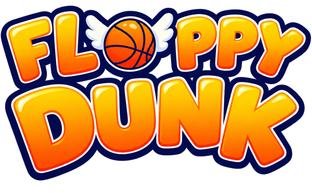

Tap (or Space / click) to flap the winged ball, and drop it down through every hoop.
Swish a hoop without touching the rim for a combo: +2, +3, +4… up to +10. Touch the rim and it's +1.
Let a hoop slip by, or drop onto the rooftop wall, and you lose a ball. You have 3 balls.
A Play Perfect prototype. Unity WebGL build.